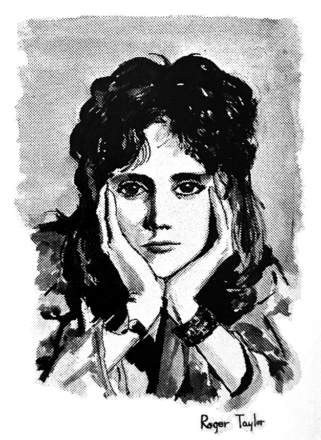
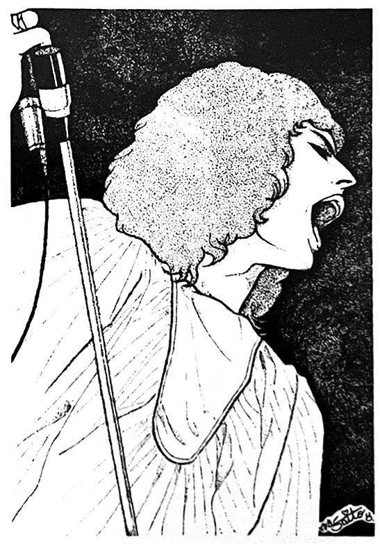

mini news


• Everyone bought clothes in Japan, and since John likes clothes that are tight-fitting, size S was sufficient for him.
• Brian never eats meat. Is that why he's so smart?
• Roger was always the first to fall asleep. It seems playing the drums is the most physically taxing role.
• John has mastered katakana! He signed his name in katakana for some of his friends. He can also read Japanese numbers up to about 100.
• Brian, John, and Roger are all huge photography enthusiasts. Whenever they had free time, they'd get together and do photoshoots.
• Freddie is the shopaholic of the group. He buys a lot of Japanese stuff, but for some reason he also bought Chinese-style furniture. Perhaps he mistook it for Japanese-made furniture?
• Everyone's favorite Japanese food was curry rice, and as long as they had some around, everyone was in a good mood.
• Queen were extremely busy the entire time they were in Japan, with Brian and others writing lyrics for their next album while they were in Tokyo.
• When it's time for an encore, don't shout "ENCORE!" Just say, "ONE MORE!"
• Roger's favorite band is The Who, and he let us listen to a tape that's never been released in Japan.
• John visited the Sony factory on April 7th. He studied electronics engineering in college.